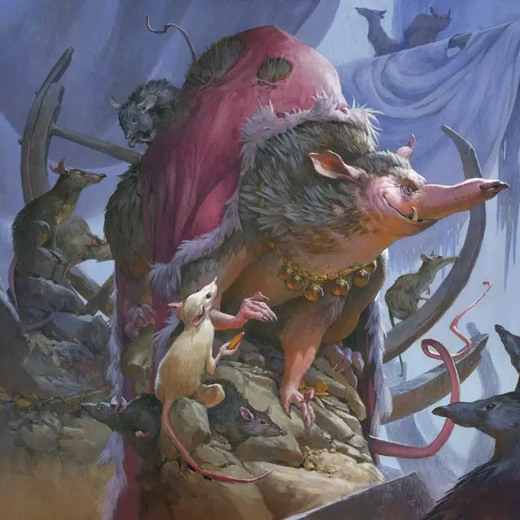

Король канализации
Sewer King
Среднее Исчадие, законно-злое

Класс Доспеха 13 (природный доспех)
Хиты 52 (8к8 + 16)
Скорость 40 футов
| мод | спас | ||
|---|---|---|---|
| СИЛ | 18 | +4 | +4 |
| ЛОВ | 13 | +1 | +1 |
| ТЕЛ | 14 | +2 | +2 |
| мод | спас | ||
|---|---|---|---|
| ИНТ | 8 | −1 | −1 |
| МДР | 12 | +1 | +1 |
| ХАР | 11 | +0 | +0 |
Навыки Восприятие +5, Скрытность +3
Иммунитет к урону яд
Иммунитет к состояниям отравление
Чувства тёмное зрение 120 футов, пассивное Восприятие 15
Языки Инфернальный, Телепатия 30 фт.
Опасность 2 (450 опыта)
Бонус мастерства +2
Особенности
Звериная речь. Король канализации может понимать и устно общаться с любым Зверем.
Действия
Протухший укус. . Рукопашная атака оружием: +6 к попаданию, досягаемость 5 фт., одна цель. Попадание: 8 (1к8 + 4) колющего урона плюс 7 (2к6) урона кислотой. Если цель — существо, она должна преуспеть в спасброске Телосложения Сл 12, иначе станет отравленной до начала следующего хода короля канализации.
Призыв роя (1/день). Король канализации бормочет и призывает на помощь рой крыс [swarm of rats]. Рой появляется в незанятом видимом королю пространстве в пределах 30 футов от него. Рой действует как союзник короля и подчиняется его приказам, и начинает свой ход сразу после короля. Рой остается до тех пор, пока король не умрет или пока король канализации не распустит его Действием.
Бонусные действия
Шустрый. Король канализации перемещается на свою скоростью, не провоцируя атак.
Описание
«Человеческий мир падет», — прошептала чудовищная крыса. «У вас есть только один выбор: падете ли вы вместе с ним?»
— Песня вредителей
Короли канализации — огромные, чудовищные крысы, наделенные дьявольской кровью. Это нечестивое влияние дает королям канализации огромные размеры, сверхъестественную силу, коварную хитрость и способность говорить.
Глубоко в недрах городов короли канализации правят подземными паразитами, мечтая о том дне, когда крысы свергнут жителей поверхности. Протухшая слюна капает из пасти короля канализации, а его тело покрыто стаями мелких паразитов.
Лорд Скиттер из Эджволла
Лорд Скиттер — король канализации, живущий глубоко в древних дварфийских руинах под городом Эджволл, расположенным на землях между королевством и дикими землями Элдраина. Глубоко внутри этих руин человек-менестрель по имени Тотентанц встретил лорда Скиттера и заключил грязную сделку. Лорд Скиттер пообещал волынщику злые и чудесные силы в обмен на то, что Тотентанц заманит жителей Эджволла в подземных владениях канализационного короля, чтобы они стали пищей для его крысиных подчинённых.